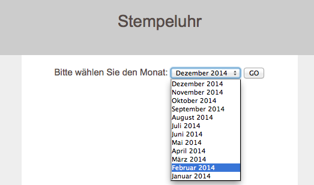
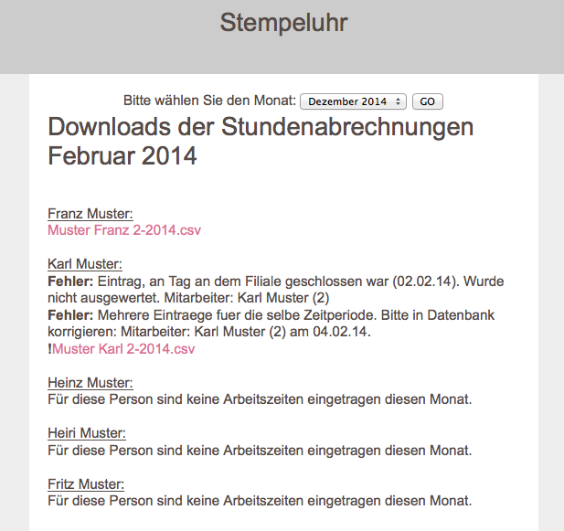

Anleitung für dies Ausgabe der Stundenabrechnungen
1. Wählen Sie den Monat aus, von dem Sie die Stundenabrechnungen erhalten möchten und klicken Sie auf "GO".

2. Klicken Sie auf die Datei, die Sie herunterladen möchten
Für jeden Mitarbeiter befindet sich unter seinem Namen der Link zu seiner Stundenabrechnung. Der Name des Dokumentes
entspricht "Vorname Nachname Monat-Jahr.csv". Beim herunterladbaren Dokument handelt es sich um eine .csv Datei
(=comma separated values), die sich mit jeder Tabellenkalkulation (wie z.B. Excel) problemlos öffnen lässt.
Beachten Sie eventuelle Fehlermeldungen. Es werden Fehlermeldungen ausgegeben, sofern Anmeldezeit und Abmeldezeit
nicht am selben Tag waren (es wird davon ausgegangen, dass Mitarbeiter nicht an Ihrem Arbeitsort übernachten), falls die
gleiche Person zur selben Zeit mehrfach angemeldet war oder falls der Anmeldezeitpunkt nach dem Abmeldezeitpunkt liegt. In
diesem Fall sollten Sie die Zeitstempel-Enträge der betreffenden Person von Hand kontrollieren und ggf. ändern. Gehen Sie
dazu auf "http://www.pmd.li/stempeluhr/adminer.php" und öffnen Sie
die Tabelle "Zeitstempel". Die Stundenabrechnungen sollten nur verwendet werden wenn keine Fehler für die entsprechende
Person aufgetreten sind.
